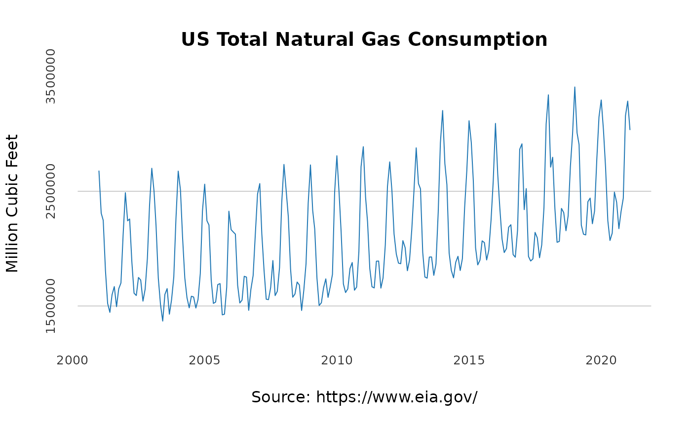

The dataset provides information about the total monthly natural gas consumption in the US between 2001 and 2020
Units: Million Cubic Feet
us_monthlyA data.frame with 2 variables.
A Date, the month and year of the observation (the day set by default to 1st of the month)
A numeric, the US monthly total natural gas consumption in a million cubic feet
US Energy Information Administration (EIA) website.
The dataset contains monthly summary of the total demand for natural gas in the US between 2001 and 2020.
data("us_monthly")
head(us_monthly)
#> date y
#> 1 2001-01-01 2676998
#> 2 2001-02-01 2309464
#> 3 2001-03-01 2246633
#> 4 2001-04-01 1807170
#> 5 2001-05-01 1522382
#> 6 2001-06-01 1444378
at_x <- seq.Date(from = as.Date("2000-01-01"),
to = as.Date("2020-01-01"),
by = "5 years")
at_y <- pretty(us_monthly$y)[c(2, 4, 6)]
plot(us_monthly$date, us_monthly$y,
col = "#1f77b4",
type = "l",
frame.plot = FALSE,
axes = FALSE,
panel.first = abline(h = at_y, col = "grey80"),
main = "US Total Natural Gas Consumption",
xlab = "Source: https://www.eia.gov/",
ylab = "Million Cubic Feet")
mtext(side =1, text = format(at_x, format = "%Y"), at = at_x,
col = "grey20", line = 1, cex = 0.8)
mtext(side =2, text = format(at_y, scientific = FALSE), at = at_y,
col = "grey20", line = 1, cex = 0.8)
